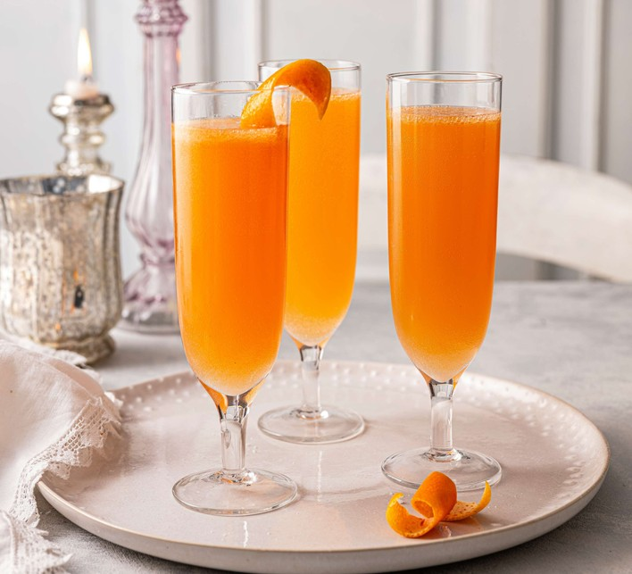
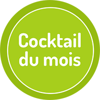

ceci est une recette de cocktail donc si vous êtes là pour autre chose cela ne sert à rien
cette recette de cocktail est une recette encestrale, elle est utile
pour les cambriolages
car vous pouvez inviter la personne lui proposer un verre de
cocktail et elle va s'endormir.


- cocktails avec ou sans alcool
- cocktails pour se bourer la soirée
- cocktails sans alcool (meilleur choix si vous ne voulez pas vous bourrer)
ingrédients
- du rhum
- du café
- du jambon
- des saucisses
- de l'eau
- du coca cola
recette
- mettre le rhum dans le café
- découper le jambon en hachis
- mettre les saucisses sans les découper
- pour ajouter du pétillant rajouter le coca cola
- homogéiniser avec de l'eau